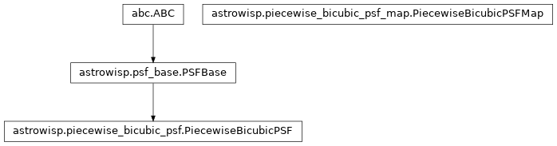

astrowisp.piecewise_bicubic_psf_map module
Class Inheritance Diagram

A wrapper class for working with PSF/PRF maps from the C/C++ library.
- class astrowisp.piecewise_bicubic_psf_map.PiecewiseBicubicPSFMap(star_shape_map_tree)[source]
Bases:
object
Provide convenient python interface to shape fitting results.